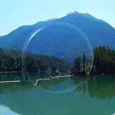

زجاج

يحوّل شكل الطبقة إلى زجاج مشطوف تنحني عبره الطبقات التي خلفه، مع لمعة على طول الحافة. مع الضوء «ناعم» تظهر الطبقة بمقدار التعبئة ويُضاء الزجاج باللون، ويكون أسطع على الحافة الداخلية للشطف المواجهة للضوء.
الإعدادات
| الإعداد | النوع | النطاق | الافتراضي |
|---|---|---|---|
| الشطف | رقم | من 0 px إلى 300 px | 24 px |
| الانكسار | رقم | من -300 px إلى 300 px | 30 px |
| زاوية الضوء | زاوية | من -3600° إلى 3600° | 135° |
| اللمعة | رقم | من 0% إلى 100% | 60% |
| لون | لون | – | #BFE6FF |
| صبغة | رقم | من 0% إلى 100% | 15% |
| الضوء | اختيار | حافة، ناعم | حافة |
| تعبئة | رقم | من 0% إلى 100% | 0% |